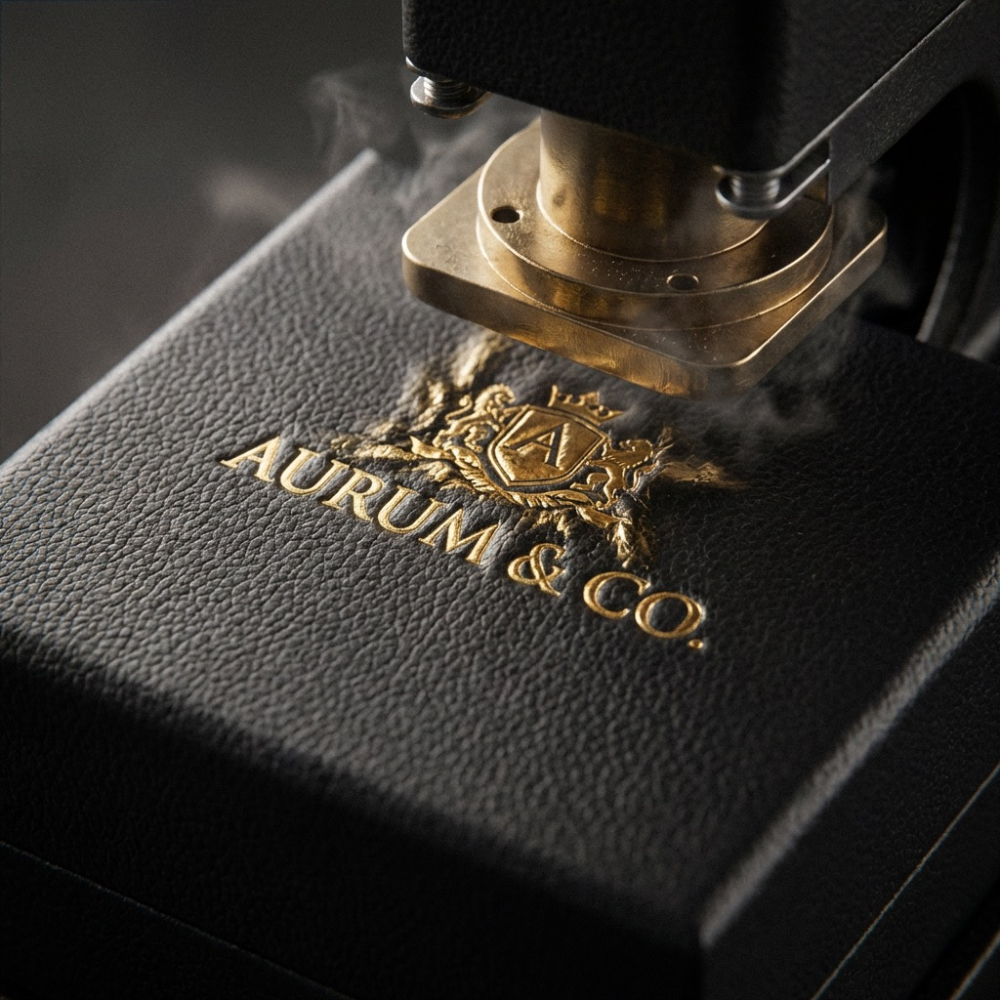

Files + tooling
Dieline dimensions, bleed, safe zones, barcode area, foil plate, and emboss registration.

Factory & quality control
Approve the structure, material, print, finish, and physical sample before the bulk run—then agree the production and packing evidence your team needs.
What factory-direct should mean
A professional packaging order begins with a shared definition of what will be made. Dimensions, board, wrap paper, insert, print method, finish location, packing method, quantity, and delivery term should be visible in one project record.
That record gives your buyer, designer, and production contact the same reference. When something changes, the impact on cost or timing can be explained before the bulk run—not discovered when cartons arrive.
Evidence over slogans. Ask us to identify which project facts can be documented now, which require a physical sample, and which depend on the final material or shipping route.
Use the packaging sample approval checklist to record fit, color, finishing, pack-out, revisions, and the exact reference that will govern production.
Before files reach prepress, use the packaging dieline and artwork requirements to control scale, panels, structural guides, print layers, finishing plates, linked assets, proofing, and release revisions.
Comparing a nearby source with an overseas factory? Use the China vs local packaging supplier guide to normalize capability, samples, quality evidence, landed cost, timing, and delivery responsibility.

One accountable workflow
Your project contact coordinates structural review, sampling, production questions, progress updates, and shipment planning. The goal is not to hide complexity; it is to make each approval understandable.
Quality control plan
The exact inspection plan depends on the box, label, finish, and quantity. These are the checkpoints that usually matter most.
Dieline dimensions, bleed, safe zones, barcode area, foil plate, and emboss registration.
Print position, visible color target, lamination, foil coverage, texture, and glue cleanliness.
Box alignment, magnet or closure, insert cavity, label unwind, and product placement.
Quantity, protective wrap, inner packs, export cartons, marks, and pallet or courier plan.
Buyer evidence pack
A logo on a website is not enough. For a material, compliance, or quality requirement, request the current document and verify that its scope applies to your order.
For certified fiber claims, use the FSC packaging supplier verification workflow to compare the public record, holder and site, product scope, transaction claim, label approval, and retained order evidence.

Plan a useful factory conversation
A complete brief shortens the question cycle and makes quotations easier to compare.
Share each product and accessory dimension, total packed weight, orientation, and sensitive surfaces.
Supply vector artwork, Pantone references where available, finish examples, and what must match across boxes and labels.
State the first-run quantity, repeat forecast, required delivery country, target date, and preferred Incoterm.
Factory and quality questions